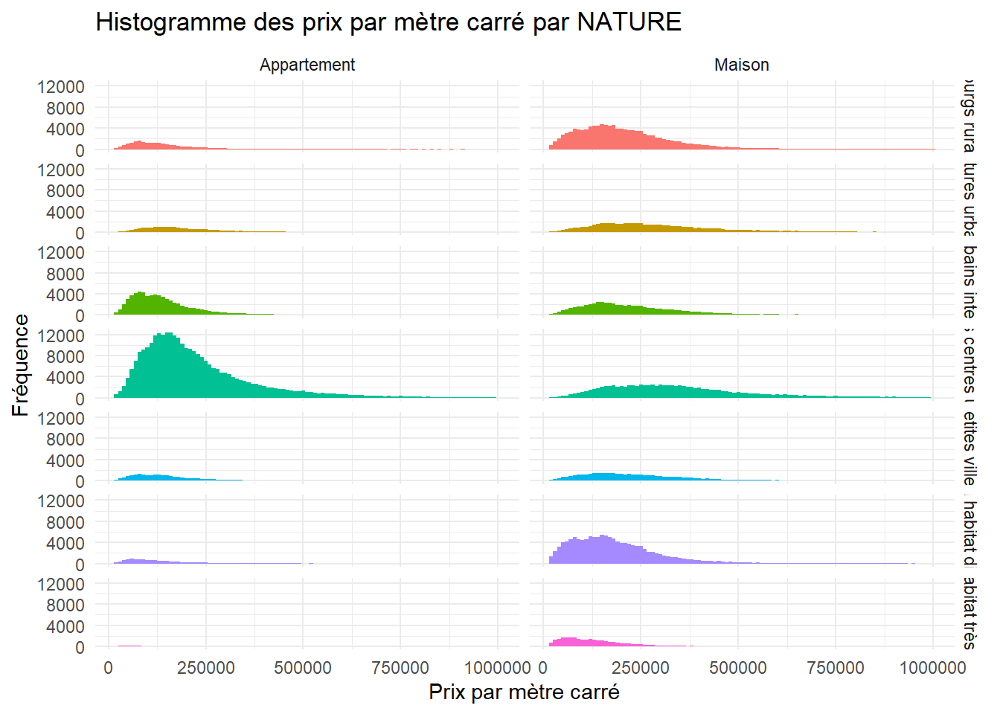
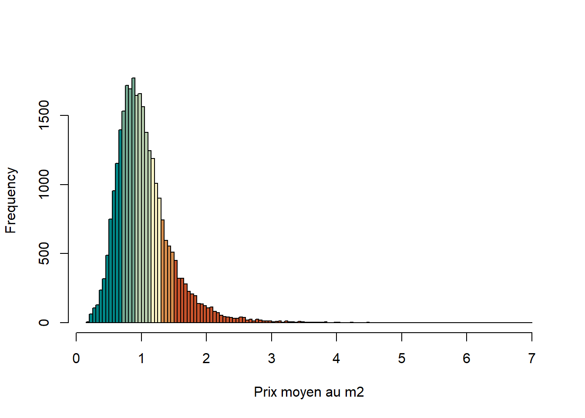

setwd('C:/Users/mericskay_b/Desktop/R/DVF')DVF_France
Emplacement du projet
Packages nécessaires
library(tidyverse) # Pour la préparation de données
library(sf) # Pour l'analyse spatiale
library(mapsf) # Pour la cartographie thématique
library(cartography) # Pour la cartographie
library(FactoMineR) # Pour l'analyse statistique
library(factoextra) # Pour l'analyse statistique
library(spdep) # pour calculer l'auto-corrélation spatiale
library(geoR) # pour calculer le semi-variogramme empirique
library(spatstat) # pour produire des surfaces lissées
library(terra) # pour le traitement de données matricielles (raster)Analyser les données DVF à l’échelle de la France

Longtemps stockées dans différentes bases complexes et peu accessibles, les données concernant les transactions foncières et immobilières sont aujourd’hui plus facilement disponibles depuis l’ouverture en 2019 de la base “Demandes de valeurs foncières” (DVF).
Toutefois, l’utilisation de ces données à des fins analytiques nécessite un travail de préparation important qu’il ne faut pas sous-estimer. Ce notebook (fait avec Quarto) présente une chaîne de traitements dédiée à la préparation des données DVF en open data formalisée dans l’environnement R et documentée dans un souci de reproductibilité.
Préparation des données
Enrichissement des données
Exploration graphique
Cartographie exploratoire
Analyse spatiale
Analyse statistique
Préparation du jeu de données

Téléchargement et chargement du jeu de données dans R
Le jeu de données utilisé est celui des Demandes de valeurs foncières géolocalisées produit par Etalab. Ce dataset est disponible par année, à l’échelle de la France ou des départements sur le plateforme de données ouvertr data.gouv.fr.
Page Data.gouv : https://www.data.gouv.fr/fr/datasets/demandes-de-valeurs-foncieres-geolocalisees/
Filtre et nettoyage des données
Etape1> Sélection des mutations de type “Ventes” de “Maison” et “Appartement”
etape1 <- DVF %>% filter(nature_mutation == "Vente")
etape1bis <- etape1 %>% filter(type_local == "Maison" | type_local == "Appartement")Etape2> Sélection et renommage des variables
etape2 <- etape1bis %>% select(id = id_mutation, disposition = numero_disposition, parcelle= id_parcelle, date = date_mutation, nature = nature_mutation, codecommune = code_commune, departement = code_departement, type = type_local, surface = surface_reelle_bati, pieces = nombre_pieces_principales, prix = valeur_fonciere, latitude, longitude)Etape3> Remplacement des cellules vides par des NA et suppression des NA
etape2[etape2==""] <- NA
etape3 <- etape2 %>% na.omit()Suppression des doublons et des mutations multiventes
Etape4> Suppression des doublons et des mutations multiventes
unique <- etape3 %>% distinct(id, prix, surface)
nbunique <- unique %>% group_by(id) %>% summarise(nb = n())
etape4 <- nbunique %>% filter(nb==1)Etape5> Jointure attributaire pour récupérer les informations des mutations
merge <- merge(etape4,etape3, by="id")
etape5 <- merge %>% distinct(id, .keep_all = TRUE) %>% select(id, date, type, nature, codecommune, prix, surface, pieces, latitude, longitude)Modification des formats des colonnes
etape5$prix <- as.numeric(etape5$prix)
etape5$surface <- as.numeric(etape5$surface)
etape5$piece <- as.numeric(etape5$piece)Suppression des valeurs aberrantes
Fixer un seuil minimal des prix (méthode des percentiles)
quantile(etape5$prix, 0.01) 1%
18000 Fixer un seuil maximal des prix (identification par un histogramme)
hist(etape5$prix, breaks = 100000, xlim = c(0,1000000))
Créer deux jeux de données (maisons / appartements)
Maisons <- etape5 %>% filter(type == 'Maison')
Appartement <- etape5 %>% filter (type == 'Appartement') Fixer un seuil maximal des surfaces (histogramme)
hist(Maisons$surface, nclass = 500, xlim = c(0,600))hist(Appartement$surface, nclass = 500, xlim = c(0,300))Etape 6> Sélection des bornes de prix et de surface
etape6 <- etape5 %>% filter(between(prix, 15000, 10000000)) %>%
filter(case_when(type=='Appartement' ~ between(surface, 10, 250)) | case_when(type=='Maison' ~ between(surface, 10, 400)))Création de la variable de prix au m² et filtre des valeurs extrêmes et aberrantes
Etape7> Création de la variable prix/m²
etape7 <- etape6 %>% mutate(prixm2 = prix/surface)Etape8 > Sélection des bornes de prix au m²
Fixer un seuil minimal des prix au m² (percentile)
quantile(etape7$prixm2, 0.01) 1%
388.3495 Fixer un seuil maximal des prix au m² (histogramme)
hist(etape7$prixm2, breaks = 2000, xlim = c(0,18000))
Filtres des valeurs des prix au m2
etape8 <- etape7 %>% filter(between(prixm2,330,18000))Transformation de la date en année
etape8$date <- as.character(etape8$date)
etape8 <- etape8 %>% mutate(ANNEE = substr(etape8$date, 1, 4))Arrondir les variables numériques
etape8$prix <- round(etape8$prix)
etape8$prixm2 <- round(etape8$prixm2)Enrichissement du jeu de données
La méthode de l’enrichissement des mutations par jointure spatiale permet de venir enrichir et agréger les mutations individuelles au sein du référentiel géographique de son choix (par exemple la couche des communes de l’année 2022). Une fois le code commune associé à chaque mutation comme donnée pivot, l’enrichissement se base sur des jointures attributaires.
L’objectif est de venir qualifier chaque mutation par une série d’informations sur :
La région (code et nom)
Le département (code et nom)
L’EPCI (code, nom et type)
La commune (code, nom et typologie)

Créer un géodataframe des mutations
etape8 <- etape8 %>% mutate(x= longitude, y = latitude )
DVFgeo<- st_as_sf(etape8, coords=c("x","y"), crs=4326 )
DVFgeo<- st_transform(DVFgeo, 2154)Enrichir d’informations sur les communes
Importer la couche des communes de France (Admin Express IGN) et la reprojeter
Communes <- st_read(dsn = "E:/AdminExpress/CommunesFrance.shp", stringsAsFactors = FALSE)Reading layer `CommunesFrance' from data source
`E:\AdminExpress\CommunesFrance.shp' using driver `ESRI Shapefile'
Simple feature collection with 34816 features and 13 fields
Geometry type: MULTIPOLYGON
Dimension: XY
Bounding box: xmin: 99040 ymin: 6046546 xmax: 1242440 ymax: 7110479
Projected CRS: RGF93 Lambert 93ContourFrance <- st_read(dsn = "E:/AdminExpress/CONTOURS_FRANCE.shp", stringsAsFactors = FALSE)Reading layer `CONTOURS_FRANCE' from data source
`E:\AdminExpress\CONTOURS_FRANCE.shp' using driver `ESRI Shapefile'
Simple feature collection with 1 feature and 4 fields
Geometry type: MULTIPOLYGON
Dimension: XY
Bounding box: xmin: 99040 ymin: 6046546 xmax: 1242443 ymax: 7110479
Projected CRS: RGF93 Lambert 93Regions <- st_read(dsn = "E:/AdminExpress/REGION.shp", stringsAsFactors = FALSE)Reading layer `REGION' from data source `E:\AdminExpress\REGION.shp' using driver `ESRI Shapefile'
Simple feature collection with 13 features and 4 fields
Geometry type: MULTIPOLYGON
Dimension: XY
Bounding box: xmin: 99040 ymin: 6046546 xmax: 1242443 ymax: 7110479
Projected CRS: RGF93 Lambert 93Communes<- st_transform(Communes, 2154)
ContourFrance<- st_transform(ContourFrance, 2154)Ajouter le nom et le code INSEE de la commune et le nom du département (selon le dernier COG)
DVFgeo <- st_join(DVFgeo, Communes[c("NOM", "INSEE_COM", "INSEE_DEP", "INSEE_REG")], left = TRUE, .predicate = within)
DVFgeo <- DVFgeo %>% rename(NOM_COM=NOM)Importer le dataset des départements
url <- "https://www.insee.fr/fr/statistiques/fichier/6800675/v_departement_2023.csv"
DEP <- read_csv(url, col_names = TRUE, locale = locale(encoding = "UTF-8"))Faire la jointure attributaire
DVFgeodep <- merge(DVFgeo, DEP, by.x = "INSEE_DEP", by.y = "DEP")
DVFgeo <- DVFgeodep[, c(names(DVFgeo), "NCC")] %>% rename(DEP=NCC)Importer le dataset des régions
url <- "https://www.insee.fr/fr/statistiques/fichier/6800675/v_region_2023.csv"
REGIONS <- read_csv(url, col_names = TRUE, locale = locale(encoding = "UTF-8"))Faire la jointure attributaire
DVFgeoreg <- merge(DVFgeo, REGIONS, by.x = "INSEE_REG", by.y = "REG")
DVFgeo <- DVFgeoreg[, c(names(DVFgeo), "NCC")] %>% rename(REGION=NCC)Importer le dataset de la typologie de l’INSEE
TYPOINSEE <- read.csv("C:/Users/mericskay_b/Dropbox/DVF/TYPOINSEE.csv")Faire la jointure attributaire
DVFgeotypo <- merge(DVFgeo, TYPOINSEE, by.x = "INSEE_COM", by.y = "Code")
DVFgeo <- DVFgeotypo[, c(names(DVFgeo), "Typologie")] %>% rename(Typo_INSEE=Typologie)Importer la couche des EPCI de France (Admin Express IGN) et la reprojeter
EPCI <- st_read(dsn = "E:/AdminExpress/EPCI.shp", stringsAsFactors = FALSE)Reading layer `EPCI' from data source `E:\AdminExpress\EPCI.shp' using driver `ESRI Shapefile'
Simple feature collection with 1243 features and 4 fields
Geometry type: MULTIPOLYGON
Dimension: XY
Bounding box: xmin: 107388.8 ymin: 6046546 xmax: 1242443 ymax: 7110479
Projected CRS: RGF93 Lambert 93EPCI<- st_transform(EPCI, 2154)Ajouter le nom, le code et le type des EPCI aux mutations
DVFgeo <- st_join(DVFgeo, EPCI[c("NOM", "NATURE", "CODE_SIREN")], left = TRUE, .predicate = within)
DVFgeo <- DVFgeo %>% rename(EPCI_NOM=NOM, EPCI_TYPE=NATURE, EPCI_CODE=CODE_SIREN)Filtre possible selon le prix au m2 et la nature de l’EPCI
Abberations <- DVFgeo %>% filter((EPCI_TYPE == "Communauté de communes") & prixm2 > 10000)
plot(Abberations["prix"])Restructurer le jeu de données
MutationsDVF <- as.data.frame(DVFgeo)
MutationsDVF <- MutationsDVF %>% select(id, date, annee= ANNEE, code_com =INSEE_COM, nom_com = NOM_COM, typo_insee = Typo_INSEE, code_dep = INSEE_DEP, nom_dep = DEP, nom_region = REGION, code_EPCI=EPCI_CODE, nom_EPCI = EPCI_NOM, type_EPCI = EPCI_TYPE, type, prix, prixm2, surface, pieces, latitude, longitude)
rm(list=setdiff(ls(), c("MutationsDVF", "Communes", "EPCI")))Ecrire le jeu de données final en csv
#write.csv(MutationsDVF, 'DVF2017.csv')Ecrire le jeu de données final en GPKG
## st_write(MutationsDVF, "DVF2022.gpkg")Fusionner plusieurs dataframe pour travailler sur plusieurs années
DVF2015 <- read.csv("C:/Users/mericskay_b/Desktop/DVFFrance/DVF2015.csv")
DVF2016 <- read.csv("C:/Users/mericskay_b/Desktop/DVFFrance/DVF2016.csv")
DVF2017 <- read.csv("C:/Users/mericskay_b/Desktop/DVFFrance/DVF2017.csv")
DVF2018 <- read.csv("C:/Users/mericskay_b/Desktop/DVFFrance/DVF2018.csv")
DVF2019 <- read.csv("C:/Users/mericskay_b/Desktop/DVFFrance/DVF2019.csv")
DVF2020 <- read.csv("C:/Users/mericskay_b/Desktop/DVFFrance/DVF2020.csv")
DVF2021 <- read.csv("C:/Users/mericskay_b/Desktop/DVFFrance/DVF2021.csv")
DVF2022 <- read.csv("C:/Users/mericskay_b/Desktop/DVFFrance/DVF2022.csv")
MutationsDVF <- rbind(DVF2018, DVF2019, DVF2020, DVF2021, DVF2022)
# DVF <- DVF %>% select(prix, prixm2, latitude, longitude, typo_insee)
MutationsDVF$prix <- as.integer(MutationsDVF$prix)
rm(list=setdiff(ls(), c("MutationsDVF")))Charger le dataset finalisé
#MutationsDVF <- read_csv("C:/Users/mericskay_b/Desktop/R/DVF/MutationsDVF.csv")Explorations graphiques
Analyses à l’échelle des communes
Récapitulatif communes
CommunesDVF <- MutationsDVF %>%
group_by(code_com, typo_insee) %>%
summarise(
nb = n(),
prix = mean(prix),
prixM2 = mean(prixm2),
nbmaisons = sum(type == "Maison"),
nbapparts = sum(type == "Appartement"),
propmaison = sum(type == "Maison")/n()*100,
propappart = sum(type == "Appartement")/n()*100,
surface = mean(surface)
)`summarise()` has grouped output by 'code_com'. You can override using the
`.groups` argument.Récapitulatif typologie INSEE
DVFdf <- as.data.frame(MutationsDVF)
TypoINSEEDVF <- MutationsDVF %>%
group_by(typo_insee) %>%
summarise(
nb = n(),
prix = mean(prix),
prixM2 = mean(prixm2),
nbmaisons = sum(type == "Maison"),
nbapparts = sum(type == "Appartement"),
propmaison = sum(type == "Maison")/n()*100,
propappart = sum(type == "Appartement")/n()*100,
surface = mean(surface)
)Importer la base comparateur de l’INSEE
baseCCINSEE <- read.csv("C:/Users/mericskay_b/Desktop/R/DVF/baseCCINSEE.csv", sep=";")
baseCCINSEE <- baseCCINSEE %>% select(CODGEO, MED20)Enrichir la table des communes avec des variables de l’INSEE
CommunesDVF <- merge(CommunesDVF, baseCCINSEE, by.x = "code_com", by.y = "CODGEO")
CommunesDVF <- CommunesDVF %>% mutate(revenu=MED20)
CommunesDVF$revenu <- as.numeric(CommunesDVF$revenu )
CommunesDVF <-CommunesDVF %>% na.omit()Scatterplot Revenus/prix
ggplot(CommunesDVF, aes(x = revenu, y = prix, size = nb, color = typo_insee)) +
geom_point() +
labs(title = "Scatterplot Revenu vs Prix",x = "Revenu", y = "Prix") +
theme(legend.position = "bottom") +
scale_x_continuous(breaks = seq(min(CommunesDVF$revenu), max(CommunesDVF$revenu), length.out = 5))Calcul de l’abordabilité
CommunesDVF <- CommunesDVF %>% mutate(affordabilite = prixM2/(revenu/12))Graphiques des prix au m2 par typologie INSEE
ggplot(CommunesDVF, aes(x = prixM2, fill = typo_insee)) +
geom_histogram(binwidth = 100) + # Réglez la largeur des barres d'histogramme
facet_wrap(~ typo_insee, scales = "free") + # Small multiples par NATURE
labs(title = "Histogramme des prix par mètre carré par type de commune",
x = "Prix par mètre carré",
y = "Fréquence") +
theme_minimal() + theme(legend.position = "none")Graphiques des surfaces par typologie INSEE
ggplot(MutationsDVF, aes(x = surface, fill = typo_insee)) +
geom_histogram(binwidth = 10) + # Réglez la largeur des barres d'histogramme
facet_wrap(~ typo_insee, scales = "free") + # Small multiples par NATURE
labs(title = "Histogramme des surfaces par type de commune",
x = "Prix par mètre carré",
y = "Fréquence") +
theme_minimal() + theme(legend.position = "none")Graphiques sur toutes les mutations
Filtres pour les rendus graphiques
MutationsDVFSM <- MutationsDVF %>% filter(prix<1000000, prixm2<10000, surface<200)Prix, type de bien et type de commune
ggplot(MutationsDVFSM, aes(x = prix, fill = typo_insee)) +
geom_histogram(binwidth = 10000) +
facet_grid(typo_insee ~ type) +
labs(title = "Histogramme des prix par mètre carré par NATURE",
x = "Prix par mètre carré",
y = "Fréquence") +
theme_minimal() + theme(legend.position = "none")
Prix au m2, type de bien et type de commune
ggplot(MutationsDVFSM, aes(x = prix, fill = typo_insee)) +
geom_histogram(binwidth = 10000) +
facet_grid(type ~ typo_insee) +
labs(title = "Histogramme des prix par mètre carré par type de commune",
x = "Prix par mètre carré",
y = "Fréquence") +
theme_minimal() + theme(legend.position = "none")Surfaces, type de bien et type de commune
ggplot(MutationsDVFSM, aes(x = surface, fill = typo_insee)) +
geom_histogram(binwidth = 2) +
facet_grid(type ~ typo_insee) +
labs(title = "Histogramme des surfaces par type de commune",
x = "Surface",
y = "Fréquence") +
theme_minimal() + theme(legend.position = "none")Analyses à l’échelle des EPCI
Récapitulatif EPCI
EPCIDVF <- MutationsDVF %>%
group_by(code_EPCI, nom_EPCI, type_EPCI) %>%
summarise(
nb = n(),
prix = mean(prix),
prixM2 = mean(prixm2),
nbmaisons = sum(type == "Maison"),
nbapparts = sum(type == "Appartement"),
propmaison = sum(type == "Maison")/n()*100,
propappart = sum(type == "Appartement")/n()*100,
surface = mean(surface)
)`summarise()` has grouped output by 'code_EPCI', 'nom_EPCI'. You can override
using the `.groups` argument.EPCIDVF <- EPCIDVF %>% na.omit()EPCIDVFsynthese <- MutationsDVF %>%
group_by(type_EPCI) %>%
summarise(
nb = n(),
prix = mean(prix),
prixM2 = mean(prixm2),
nbmaisons = sum(type == "Maison"),
nbapparts = sum(type == "Appartement"),
propmaison = sum(type == "Maison")/n()*100,
propappart = sum(type == "Appartement")/n()*100,
surface = mean(surface)
)
EPCIDVFsynthese <- EPCIDVFsynthese %>% na.omit()
print(EPCIDVFsynthese)# A tibble: 5 × 9
type_EPCI nb prix prixM2 nbmaisons nbapparts propmaison propappart
<chr> <int> <dbl> <dbl> <int> <int> <dbl> <dbl>
1 Communauté d'a… 330631 2.36e5 2940. 193569 137062 58.5 41.5
2 Communauté de … 318214 2.05e5 2331. 260293 57921 81.8 18.2
3 Communauté urb… 46524 2.00e5 2561. 23651 22873 50.8 49.2
4 Etablissement … 57395 3.88e5 5983. 13173 44222 23.0 77.0
5 Métropole 284187 3.22e5 4884. 74633 209554 26.3 73.7
# ℹ 1 more variable: surface <dbl>Graphiques des prix par type d’EPCI
ggplot(EPCIDVF, aes(x = prixM2, fill = type_EPCI)) +
geom_histogram(binwidth = 10) + # Réglez la largeur des barres d'histogramme
facet_wrap(~ type_EPCI, scales = "free") + # Small multiples par NATURE
labs(title = "Histogramme des prix par mètre carré par NATURE",
x = "Prix par mètre carré",
y = "Fréquence") +
theme_minimal()Cartographie exploratoire
Ajout des couches géographiques
Communes <- st_read(dsn = "E:/AdminExpress/CommunesFrance.shp", stringsAsFactors = FALSE)Reading layer `CommunesFrance' from data source
`E:\AdminExpress\CommunesFrance.shp' using driver `ESRI Shapefile'
Simple feature collection with 34816 features and 13 fields
Geometry type: MULTIPOLYGON
Dimension: XY
Bounding box: xmin: 99040 ymin: 6046546 xmax: 1242440 ymax: 7110479
Projected CRS: RGF93 Lambert 93ContourFrance <- st_read(dsn = "E:/AdminExpress/CONTOURS_FRANCE.shp", stringsAsFactors = FALSE)Reading layer `CONTOURS_FRANCE' from data source
`E:\AdminExpress\CONTOURS_FRANCE.shp' using driver `ESRI Shapefile'
Simple feature collection with 1 feature and 4 fields
Geometry type: MULTIPOLYGON
Dimension: XY
Bounding box: xmin: 99040 ymin: 6046546 xmax: 1242443 ymax: 7110479
Projected CRS: RGF93 Lambert 93Regions <- st_read(dsn = "E:/AdminExpress/REGION.shp", stringsAsFactors = FALSE)Reading layer `REGION' from data source `E:\AdminExpress\REGION.shp' using driver `ESRI Shapefile'
Simple feature collection with 13 features and 4 fields
Geometry type: MULTIPOLYGON
Dimension: XY
Bounding box: xmin: 99040 ymin: 6046546 xmax: 1242443 ymax: 7110479
Projected CRS: RGF93 Lambert 93EPCI <- st_read(dsn = "E:/AdminExpress/EPCI.shp", stringsAsFactors = FALSE)Reading layer `EPCI' from data source `E:\AdminExpress\EPCI.shp' using driver `ESRI Shapefile'
Simple feature collection with 1243 features and 4 fields
Geometry type: MULTIPOLYGON
Dimension: XY
Bounding box: xmin: 107388.8 ymin: 6046546 xmax: 1242443 ymax: 7110479
Projected CRS: RGF93 Lambert 93Communes<- st_transform(Communes, 2154)
ContourFrance<- st_transform(ContourFrance, 2154)
EPCI<- st_transform(EPCI, 2154)Cartographie à l’échelle des communes
Jointure attributaire entre récapitulatif des communes et la couche communes
Communes <- merge(Communes, CommunesDVF, by.x = "INSEE_COM", by.y = "code_com")Cartographie des prix moyens par commune
mf_theme("default")
mf_map(
x = Communes,
var = "prix",
type = "choro",
breaks = "quantile",
nbreaks = 8,
pal = "Tropic",
rev = TRUE,
border = NA,
#leg_pos = NA ,
leg_title = "Prix moyen par commune"
)
mf_map(x = ContourFrance,
alpha = 0.5,
type = "base",
col = NA,
border = "black",
lwd = 0.02,
add = TRUE)
mf_layout(title = "Prix de l'immobilier résidentiel / Par commune",
credits = paste0("Sources: DGFIP-IGN, 2023")
)Cartographie des prix moyens au m2
mf_theme("default")
mf_map(
x = Communes,
var = "prixM2",
type = "choro",
breaks = c(0, 1200, 1500, 1800, 2200, 3000, max(Communes$prixM2)),
nbreaks = 6,
pal = "RdYlGn",
border = NA,
leg_pos = NA ,
leg_title = "Prix moyen au m2 \npar commune"
)
mf_map(x = ContourFrance,
alpha = 0.5,
type = "base",
col = NA,
border = "black",
lwd = 0.02,
add = TRUE)
mf_layout(title = "Prix de l'immobilier résidentiel / Par commune",
credits = paste0("Sources: DGFIP-IGN, 2023")
)Histogramme de distribution de la variable
my_breaks <- hist(Communes$prixM2,breaks=100)$breaks my_colors <- rep("#006228", length(my_breaks))
my_colors[my_breaks > 1200 & my_breaks <= 1500] <- "#6AAB44"
my_colors[my_breaks > 1500 & my_breaks <= 1800] <- "#D7E88D"
my_colors[my_breaks > 1800 & my_breaks <= 2200] <- "#F6DE90"
my_colors[my_breaks > 2200 & my_breaks <= 3000] <- "#E78200"
my_colors[my_breaks > 3000] <- "#A51122"
hist(Communes$prixM2,
breaks = my_breaks,
main = "",
xlab = "Prix moyen au m2",
col = my_colors)Cartographie de l’abordabilité
mf_theme("default")
mf_map(
x = Communes,
var = "affordabilite",
type = "choro",
breaks = c(0, 0.5, 0.6, 0.7, 0.8, 0.9, 1, 1.1, 1.2, 1.3, max(Communes$affordabilite)),
nbreaks = 10,
pal = "Geyser",
rev = TRUE,
border = NA,
#leg_pos = NA ,
leg_title = "Mois de salaire (médian) \n nécessaires pour acheter 1m²")
mf_map(x = ContourFrance,
alpha = 0.5,
type = "base",
col = NA,
border = "black",
lwd = 0.02,
add = TRUE)
mf_layout(title = "Abordabilité de l'immobilier résidentiel / Par commune",
credits = paste0("Sources: DGFIP-IGN, 2023")
)Histrogramme de distribution de la variable
my_breaks <- hist(Communes$affordabilite,breaks=100)$breaks my_colors <- rep("#008585", length(my_breaks))
my_colors[my_breaks > 0.7 & my_breaks <= 0.9] <- "#75a992"
my_colors[my_breaks > 0.9 & my_breaks <= 1.1] <- "#b8cdae"
my_colors[my_breaks > 1.1 & my_breaks <= 1.3] <- "#fbf2c4"
my_colors[my_breaks > 1.3 & my_breaks <= 1.5] <- "#d78d4c"
my_colors[my_breaks > 1.5] <- "#c7522b"
hist(Communes$affordabilite,
breaks = my_breaks,
main = "",
xlab = "Prix moyen au m2",
col = my_colors)
Cartographie à l’échelle des EPCI
Jointure attributaire entre récapitulatif des EPCI et la couche EPCI
EPCI <- merge(EPCI, EPCIDVF, by.x = "CODE_SIREN", by.y = "code_EPCI")Cartographie du volume de mutations par EPCI
mf_theme("default")
# Affichage du fond de carte des départements
mf_map(x = EPCI,
col = "white",
border = "grey",
lwd = 0.3)
mf_map(x = EPCI,
type = "prop",
var = "nb",
inches = 0.25,
col = "red4",
border = "black",
lwd = 0.002,
leg_title = "Nombre de mutations par EPCI")
mf_layout(
title = "Nb de mutations par EPCI",
credits = paste0(
"Sources: DGFIP-IGN, 2023"
)
)
mf_map(x = ContourFrance,
alpha = 0.5,
type = "base",
col = NA,
border = "black",
lwd = 0.02,
add = TRUE)Cartographie du volume de maisons et prix moyen au m2
mf_theme("default")
# Affichage du fond de carte des départements
mf_map(x = EPCI,
col = "white",
border = "grey85",
lwd = 0.3)
mf_map(
x = EPCI,
var = c("nbmaisons", "prix"),
type = "prop_choro",
border = "grey50",
inches = 0.15,
lwd = 0.1,
leg_pos = c("topright", "right"),
leg_title = c("Nb de ventes", "Prix moyen"),
breaks = "quantile",
nbreaks = 5,
pal = "RdYlGn",
leg_val_rnd = c(0, -2),
leg_frame = c(TRUE, TRUE)
)
mf_map(x = ContourFrance,
alpha = 0.5,
type = "base",
col = NA,
border = "black",
lwd = 0.02,
add = TRUE)
mf_layout(
title = "Nombre de maisons vendues et prix moyen au m2",
credits = paste0("Sources: DGFIP-IGN, 2023"))Cartographie du volume d’appartements vendus et prix moyen au m2
mf_theme("default")
# Affichage du fond de carte des départements
mf_map(x = EPCI,
col = "white",
border = "grey85",
lwd = 0.3)
mf_map(
x = EPCI,
var = c("nbapparts", "prix"),
type = "prop_choro",
border = "grey50",
inches = 0.2,
lwd = 0.1,
leg_pos = c("topright", "right"),
leg_title = c("Nb de ventes", "Prix moyen au m2"),
breaks = "quantile",
nbreaks = 5,
pal = "RdYlGn",
leg_val_rnd = c(0, -2),
leg_frame = c(TRUE, TRUE)
)
mf_map(x = ContourFrance,
alpha = 0.5,
type = "base",
col = NA,
border = "black",
lwd = 0.02,
add = TRUE)
mf_layout(
title = "Volume des appartements et prix moyen",
credits = paste0("Sources: DGFIP-IGN, 2023"))Cartographie des prix moyens par EPCI
mf_theme("default")
mf_map(
x = EPCI,
var = "prix",
type = "choro",
breaks = "quantile",
nbreaks = 6,
pal = "Tropic",
border = NA,
leg_pos = "topright",
leg_title = "Prix moyen au par EPCI"
)
mf_map(x = ContourFrance,
alpha = 0.5,
type = "base",
col = NA,
border = "black",
lwd = 0.02,
add = TRUE)
mf_map(x = Regions,
alpha = 0.5,
type = "base",
col = NA,
border = "black",
lwd = 0.02,
add = TRUE)
mf_layout(
title = "Prix de l'immobilier résidentiel / par EPCI",
credits = paste0("Sources: DGFIP-IGN, 2023"))Cartographie des prix moyens au m2 par EPCI
mf_theme("default")
mf_map(
x = EPCI,
var = "prixM2",
type = "choro",
breaks = c(0, 1200, 1400, 1800, 2200, 3000, max(EPCI$prixM2)),
nbreaks = 6,
pal = "RdYlGn",
border = NA,
leg_pos = "topright",
leg_title = "Prix moyen au m2 par EPCI"
)
mf_map(x = ContourFrance,
alpha = 0.5,
type = "base",
col = NA,
border = "black",
lwd = 0.02,
add = TRUE)
mf_map(x = Regions,
alpha = 0.5,
type = "base",
col = NA,
border = "black",
lwd = 0.02,
add = TRUE)
mf_layout(
title = "Prix de l'immobilier résidentiel / Par EPCI",
credits = paste0( "Sources: DGFIP-IGN, 2023")
)Histogramme de distribution de la variable
my_breaks <- hist(EPCI$prixM2,breaks=100)$breaks my_colors <- rep("#006228", length(my_breaks))
my_colors[my_breaks > 1200 & my_breaks <= 1500] <- "#6AAB44"
my_colors[my_breaks > 1500 & my_breaks <= 1800] <- "#D7E88D"
my_colors[my_breaks > 1800 & my_breaks <= 2200] <- "#F6DE90"
my_colors[my_breaks > 2200 & my_breaks <= 3000] <- "#E78200"
my_colors[my_breaks > 3000] <- "#A51122"
hist(EPCI$prixM2,
breaks = my_breaks,
main = "",
xlab = "Prix moyen au m2",
col = my_colors)Analyse spatiale
Dataset spatial des mutations
DVFgeo<- st_as_sf(MutationsDVF, coords=c("longitude","latitude"), crs=4326)
DVFgeo<- st_transform(DVFgeo, 2154)Analyses par carroyages
Créer une grille avec des mailles de 5km
grille <- st_make_grid(Communes, cellsize = 10000, crs = 2154, what = "polygons", square = TRUE)
grille <- st_sf(grille)
grille <- grille %>% mutate(IDOK = row_number()) Agrégation spatiale sur le carroyage (compte, prix et prix au m2)
# --> calcul potentiellement long selon la précision du maillage
grilleDVF <- grille %>% st_join(DVFgeo) %>% group_by(IDOK) %>% summarise(Nb_Mutations = n(), prixm2moyen = mean(prixm2), prixmoyen = mean(prix))
grilleDVF <- grilleDVF %>% na.omit()Ecrire le jeu de données en GPKG pour un usage dans un logiciel SIG / Chargement du dataset
#st_write(grilleDVF, "grille3km.gpkg", append = FALSE)
#grilleDVF <- st_read(dsn = "C:/Users/mericskay_b/Desktop/R/DVF/grille3km.gpkg", stringsAsFactors = FALSE)Cartographie des prix moyens au m2
mf_theme("default")
mf_map(
x = grilleDVF,
var = "prixm2moyen",
type = "choro",
breaks = c(0, 1200, 1400, 1800, 2200, 3000, max(grilleDVF$prixm2moyen)),
nbreaks = 6,
pal = "RdYlGn",
border = NA,
leg_pos = "topright",
leg_title = "Prix moyen au m2 ")
mf_map(x = ContourFrance,
alpha = 0.5,
type = "base",
col = NA,
border = "black",
lwd = 0.02,
add = TRUE)
mf_layout( title = "Prix de l'immobilier résidentiel / Par carreaux de 5km",
credits = paste0("Sources: DGFIP-IGN, 2023"))Histogramme de distribution de la variable
my_breaks <- hist(grilleDVF$prixm2moyen,breaks=100)$breaks my_colors <- rep("#006228", length(my_breaks))
my_colors[my_breaks > 1200 & my_breaks <= 1500] <- "#6AAB44"
my_colors[my_breaks > 1500 & my_breaks <= 1800] <- "#D7E88D"
my_colors[my_breaks > 1800 & my_breaks <= 2200] <- "#F6DE90"
my_colors[my_breaks > 2200 & my_breaks <= 3000] <- "#E78200"
my_colors[my_breaks > 3000] <- "#A51122"
hist(grilleDVF$prixm2moyen,
breaks = my_breaks,
col = my_colors)Cartographie des prix moyens
mf_theme("default")
mf_map(
x = grilleDVF,
var = "prixmoyen",
type = "choro",
breaks = "quantile",
nbreaks = 6,
pal = "Tropic",
border = NA,
rev=TRUE,
leg_pos = "topright",
leg_title = "Prix moyen au m2 "
)
mf_map(x = ContourFrance,
alpha = 0.5,
type = "base",
col = NA,
border = "black",
lwd = 0.02,
add = TRUE)
mf_layout(
title = "Prix de l'immobilier résidentiel par carreaux de 5km",
credits = paste0(
"Sources: DGFIP-IGN, 2023"
)
)Lissage spatial à partir des prix moyen des communes
Création du jeux de données (centroides des communes)
Communeslissage <- Communes
Communeslissage <- Communeslissage %>% filter(!(prixM2 >10000 & nb ==1))
Communeslissagecentro <- st_centroid(Communeslissage)Warning: st_centroid assumes attributes are constant over geometriesCommuneslissagecentro<- st_transform(Communeslissagecentro, 2154)
Communeslissagecentro <- Communeslissagecentro[complete.cases(Communeslissagecentro$prixM2),]Calcul des paramètres du lissage
# Identification du plus proche voisin de chaque commune
listPPV <- knearneigh(Communeslissagecentro, k = 1) # pour connaître le plus proche voisin de chaque commune
PPV <- knn2nb(listPPV, row.names = Communeslissagecentro$INSEE_COM) # pour convertir l'objet knn en objet nb
distPPV <- nbdists(PPV, Communeslissagecentro) # pour connaître la distance entre plus proches voisins
# Pour afficher un résumé statistique et l'histogramme des distances au plus proche voisin
print(as.data.frame(t(as.matrix(summary(unlist(distPPV)))))) Min. 1st Qu. Median Mean 3rd Qu. Max.
1 139.5954 2265.006 2861.825 3067.675 3672.447 23825.39hist(unlist(distPPV), breaks = 20,
main = "Distance au plus proche voisin",
col = "black", border = "white", xlab = "Distance", ylab = "Fréquence")# pour créer un objet ppp (format spatstat) et y intégrer dedans l'emprise et les valeurs à lisser (prix moyen au m²)
coordinates <- st_coordinates(Communeslissagecentro)
DVF.ppp <- ppp(x = coordinates[, 1], y = coordinates[, 2], window = Emprise, marks = Communeslissagecentro$prixM2)Warning: 8 points were rejected as lying outside the specified windowLissage spatial
# pour calculer la surface lissée (rayon lissage : 3 km et résolution spatiale de l'image : 5 ha) --> calcul long dépendand de la précision choisie
cartelissee <- Smooth(DVF.ppp, sigma = 3000, weights = DVF.ppp$marks, eps = 5000)Warning: Numerical underflow detected: sigma is probably too small# Conversion de la surface lissée au format raster
cartelissee.raster <- terra::rast(cartelissee)
crs(cartelissee.raster) <- st_crs(Communes)$sridCartographie du lissage spatial
# Paramétrage des classes (breaks) et des couleurs
bks <- c(0, 1500, 2000, 2500, 3000, 4000, 15000)
cols <- c("#006228", "#6AAB44", "#D7E88D", "#F6DE90", "#E78200", "#A51122")
# Paramétrage des marges de la fenêtre pour maximiser l'emprise de la carte
par(mar = c(0, 0, 0, 0))
# Affichage des communes de RM et alentours en arrière-plan et centrage de la carte sur Rennes Métropole
plot(st_geometry(ContourFrance), lwd = 0.1, col = "grey95", border = "white", bg = "white", xlim = c(st_bbox(ContourFrance)[1], st_bbox(ContourFrance)[3]), ylim = c(st_bbox(ContourFrance)[2], st_bbox(ContourFrance)[4]))
# Affichage de la carte lissée et du contour des IRIS
plot(cartelissee.raster, breaks = bks, col = cols, legend = FALSE, add = TRUE)
plot(ContourFrance$geometry, border = "black", alpha=1, lwd = 1.5, add = TRUE)
# Affichage de la carte lissée et du contour des IRIS
plot(cartelissee.raster, breaks = bks, col = cols, legend = FALSE, add = TRUE)
plot(Regions$geometry, border = "black", alpha=1, lwd = 1, add = TRUE)
# Légende
legendChoro(
pos = "bottomleft",
title.txt = "Prix moyen \nau m² (Euros)",
breaks = bks,
nodata = FALSE,
values.rnd = -1,
border = "white",
col = cols
)Histogramme de distribution
my_breaks <- hist(cartelissee.raster,breaks=100)$breaks my_colors <- rep("#006228", length(my_breaks))
my_colors[my_breaks > 1500 & my_breaks <= 2000] <- "#6AAB44"
my_colors[my_breaks > 2000 & my_breaks <= 2500] <- "#D7E88D"
my_colors[my_breaks > 2500 & my_breaks <= 3000] <- "#F6DE90"
my_colors[my_breaks > 3000 & my_breaks <= 3500] <- "#E78200"
my_colors[my_breaks > 3500] <- "#A51122"
hist(cartelissee.raster,
breaks = my_breaks,
main = "",
xlab = "Prix moyen au m2",
col = my_colors)Analyse statistique
L’identification et la délimitation géographique de sous marchés regroupant des communes présentant des caractéristiques similaires permet de saisir plus en profondeur les dynamiques immobilières et leur inscription spatiale. Nous proposons ici une segmentation du marché immobilier résidentiel français à l’échelon intercommunal, qui repose sur une méthode de classification ascendante hiérarchique (CAH)
Cette technique de partitionnement statistique permet de révéler les différences spatiales locales en regroupant les 1185 EPCI en classes homogènes. La CAH permet d’affiner les explorations par l’analyse simultanée de plusieurs variables
Segmentation des sous-marchés immobiliers à l’échelle des EPCI par CAH
Préparation du jeu de données
EPCICAH <- as.data.frame(EPCIDVF)
EPCICAH <- EPCICAH %>% na.omit()
CAHdf <- EPCICAH %>% select(prix, prixM2, propmaison, propappart, surface)Variables centrées-réduites
CAH <- scale(CAHdf)Réaliser l’ACP
pca_result <- PCA(CAH, graph = TRUE)
Réalisez une CAH sur les composantes principales (CP)
cah_result <- hclust(dist(CAH))
clusters <- cutree(cah_result, k = 6)
EPCIDVF$Cluster <- clustersTableau reapitulatif des groupes
RecapCAHEPCI <- EPCIDVF %>% group_by(Cluster) %>% summarise(NbEPCI= n(), Prixmoyen = mean(prix), Prixm2moyen = mean(prixM2),Surfacemoyen = mean(surface), PropMaison = mean(propmaison), PropAppart= mean(propappart))
print(RecapCAHEPCI)# A tibble: 6 × 7
Cluster NbEPCI Prixmoyen Prixm2moyen Surfacemoyen PropMaison PropAppart
<int> <int> <dbl> <dbl> <dbl> <dbl> <dbl>
1 1 158 216364. 2958. 74.9 45.5 54.5
2 2 880 161056. 1691. 97.8 90.2 9.84
3 3 91 336129. 3649. 95.1 76.6 23.4
4 4 5 567430. 5168. 111. 85.8 14.2
5 5 28 300303. 4955. 61.3 23.2 76.8
6 6 20 479936. 6271. 75.8 31.3 68.7 Graphique de variations à la moyenne
CAHEPCI <- RecapCAHEPCI %>% mutate(Moy_Surface = mean(EPCIDVF$surface),
Moy_Prix = mean(EPCIDVF$prix),
Moy_Prixm2 = mean(EPCIDVF$prixM2),
Moy_PropMaisons = mean(EPCIDVF$propmaison),
Moy_PropApparts = mean(EPCIDVF$propappart),
Prix=(Prixmoyen- Moy_Prix)/Moy_Prix*100,
Prixm2=(Prixm2moyen- Moy_Prixm2)/Moy_Prixm2*100,
Surface=(Surfacemoyen-Moy_Surface)/Moy_Surface*100,
PropMaison=(PropMaison-Moy_PropMaisons)/Moy_PropMaisons*100,
PropAppart=(PropAppart-Moy_PropApparts)/Moy_PropApparts*100)
CAHEPCI <- CAHEPCI %>% select(Cluster, Prix, Prixm2, Surface, PropMaison, PropAppart)
gather <- CAHEPCI %>% gather(key=variable, value= "value", Prix:PropAppart)
gather$Cluster <- as.character(gather$Cluster)
ggplot(gather, aes(x=variable, y=value, fill=Cluster)) + geom_bar(stat = "identity") + coord_flip() + scale_fill_manual(values=c("#ff851b","#39a699","#FF4136","#f9c155","#1f78b4","#2cb1e3")) + ylab("Variation a la moyenne (%)") + theme_bw() + theme(legend.position = "none") + facet_wrap(~Cluster, ncol = 1)Cartographie de la CAH
EPCI <- merge(EPCI, EPCIDVF, by.x = "CODE_SIREN", by.y = "code_EPCI")
mf_theme("default")
mf_map( x = EPCI, var = "Cluster", type = "typo",
pal = c("#FF4136","#f9c155","#416979","#39a699","#FF851B","#2cb1e3"),
val_order = c( "6","3","4","2","5","1"),
border = "grey", lwd = 0.01,
leg_pos = "topright",
leg_title = "Typologie des sous-marchés" )
mf_layout(title = "Sous-marchés de l'immobilier résidentiel",
credits = paste0("Sources: DGFIP-IGN, 2023"))